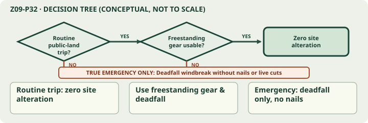

Z09-P32 · Tools and construction · New manuscript
Follow low-impact construction rules without nailing or cutting live trees
Keep routine camp construction lawful and reversible while clearly separating recreation rules from rare life-safety emergencies.
When it applies · All public forests, parks, wilderness areas and shared backcountry corridors.
Equipment · Local land-agency regulations, non-destructive cordage and manufactured camp gear.

Actions
- Check specific park or forest regulations before rigging tarps or gathering deadfall; cutting live saplings, peeling birch bark, digging trenches and driving nails into trees are widely prohibited.[K11, E21, E22]
- Rely on manufactured shelters, stoves and non-destructive wide-strap lashings for routine trips, removing all cordage and scattering deadfall when breaking camp.[K11, E22]
- Reserve natural-material improvised windbreaks strictly for genuine unequipped survival emergencies—and even then choose dead downed material on safe ground without cutting live timber needlessly.[K11, E05, E22]
Failure recognition · Building a semi-permanent pole camp and nailed bench in a national forest, damaging live trees and leaving hazardous wire and scars behind.[K11, E22]
Verify · Confirm zero live vegetation cut, zero nails/wire driven into trees and full clean removal of temporary utility ties before departure.[K11, E22, ED]
Stop or change course · When local rules forbid deadfall collection or tree attachment, use freestanding gear and leave surrounding timber completely untouched.[K11, E21, E22]
Evidence and editorial notes
- E05 · NWS · What To Do If You're Caught in a Winter Storm (current web edition)
- Section: Outside and find shelter · Conditions: Cold, wet or windy winter conditions
Support: Block wind, stay dry and keep off cold ground. Keep exposure reduction separate from making a fire.
Limitations: Improvised windbreaks do not provide rated thermal protection or snow-load capacity. · Conflicting evidence: None; aligns with CDC-H.
Editorial note: Separates wind, ground, and moisture heat-loss pathways. · Specialist reviewer: Cold-weather shelter specialist
Primary source · checked 2026-11-24 - E21 · USDA Forest Service · Know Before You Go: Camping (current web edition)
- Section: Know Before You Go: Camping > Site Selection and Safety · Conditions: Dispersed and developed National Forest camping
Support: Verify site legality, distance from water, wildlife food-storage rules, and weather exposure; leave fragile vegetation undisturbed and avoid digging drainage trenches where prohibited.
Limitations: Dispersed camping rules vary sharply by forest and wilderness designation. · Conflicting evidence: Prohibits legacy trenching practices that damage soils and still fail in heavy runoff.
Editorial note: Replaces obsolete ditch-digging advice with slope/drainage site selection. · Specialist reviewer: Land management and wilderness shelter
Primary source · checked 2026-11-24 - E22 · NPS · Leave No Trace Seven Principles (current web edition)
- Section: Principle 2 > Travel and Camp on Durable Surfaces · Conditions: Campsite selection and shelter setup on public lands
Support: Pitch shelters on established pads, rock, gravel, dry grass, or snow rather than fragile meadows or saturated shorelines; do not alter terrain or cut live vegetation for shelter frames.
Limitations: Deadfall shelter construction is inappropriate in high-use or protected zones except genuine life-safety emergencies. · Conflicting evidence: Restricts destructive improvised shelter building during routine trips.
Editorial note: Separates lawful low-impact practice from emergency improvised cover. · Specialist reviewer: Land management and wilderness ethics
Primary source · checked 2026-11-24 - K11 · NPS · Leave No Trace Seven Principles (current web edition)
- Section: Principle 2 and 5 > Low-Impact Construction and Material Use · Conditions: Temporary camp craft and emergency construction on public lands
Support: Avoid cutting live saplings, nailing into live trees or building permanent structures on public lands; dismantle temporary non-destructive lashings and leave natural features intact.
Limitations: Life-safety emergencies differ from routine camp practice but still require hazard-free builds. · Conflicting evidence: Restricts destructive bushcraft construction in routine recreation.
Editorial note: Distinguishes lawful low-impact knots/lashings from destructive camp building. · Specialist reviewer: Land management and wilderness ethics
Primary source · checked 2026-11-24
Source lineage · NPS Leave No Trace and USFS camping rules; new manuscript · Classification · New manuscript.